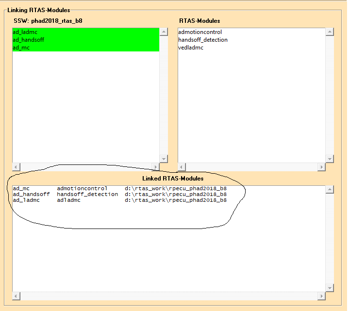

CW20: Mi 22.05.2019 10:13-------------------------------------------------------------------------------------------------------------------
Wenn man das Projekt von einem aleten verzeichnis kopiert, dann sind die Verknüpfungen der Module nicht automatisch umgesetzt:
z.B. einen Branch erstellzt von "rpecu_phad2018_b8" und in den Pfad "rpecu_phad2018_b8_VEDLaDMC" ausgecheckt,
Im Orangen Builder sieht es aber wie folgt aus: d.h der schaut immer noch auf das alte Verzeichnis.

Lösung:
D:\RTAS_work\rpecu_phad2018_b8_VEDLaDMC\linked_build\app\tc1793_svn_dana\prj\phad2018_rtas_b8\phad2018_rtas_b8.rml
muss angepasst werden
CW20: Mi 22.05.2019 10:35-------------------------------------------------------------------------------------------------------------------
Mit RTAS-Asap SSW-Manager: